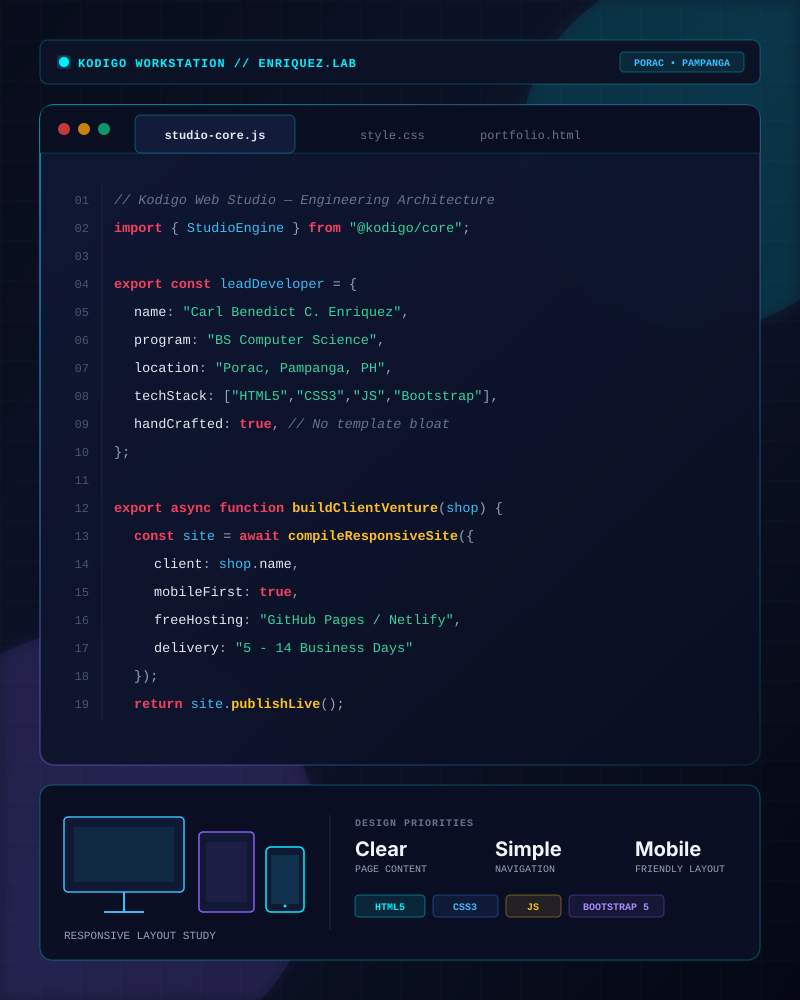

Kodigo Web Studio · A Business Proposal
Your business, online and easy to find.
I’m Carl Benedict C. Enriquez, a Computer Science student from Porac, Pampanga. I’m starting Kodigo to help local businesses put their menus, services, and contact details in one easy-to-use website.

Where Kodigo came from, what it stands for, and what it aims to accomplish in its first year.
“When I think about people struggling to find customers online, I think of my parents, my older siblings, and the people I love. It is hard to watch someone close to you try to reach customers and wish you could do more to help. That is what makes this personal to me: I want to build something that helps their efforts reach people who might otherwise never discover what they offer.”
I'm studying BS Computer Science and I already write HTML, CSS, JavaScript, and Java. Instead of waiting until graduation, I want to use those skills now — and learn how to run a small business at the same time.
I chose the name Kodigo as a nod to coding. I want this studio to connect what I’m learning in Computer Science with useful work for people in my community.
Mission Help small businesses look trustworthy online without spending a fortune.
Vision Become the web studio that local shops in my community think of first.